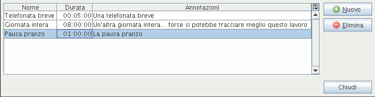

Action template editorWith the action templates editor you can manage a list of action templates. They are useful when you have to do the same job many and many times, so you'd likely add always the same name, description or even the same duration. The action templates editor is available from the |Tools|Templates| menu or from the “Add action” dialog.
 The templates editor is made up of a simple table To add a new action template click on the New button. A new row will appear in the table. To delete the selected action template, click on the Delete button. To edit a template, select the cell and double click on it or press the F2 function key. |